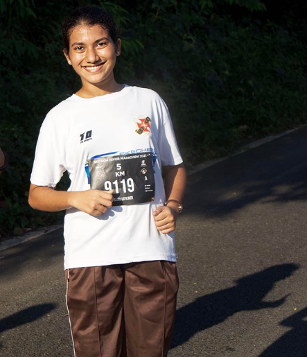

Sejal Lotliker

About me
Hello! I am Sejal Lotliker, a physics Undergraduate student.
Physics is something that always fascinates me a lot.
From the macroscopic world of giant stars and black holes to the subatomic quantum world, physics has always answered most of the mysteries of our universe.
My interests mainly include Research in the field of Spectroscopy, Quantum mechanics,
Astronomy and Astrophysics, Experimental physics and Computational physics.
I am also an INSPIRE- SHE Scholar of 2020 batch.
And I am a NCC cadet from 1 Goa BN NCC panaji Goa
Courses done
1) NPTEL course:(12 weeks) Electromagnetism by IISER Bhopal.
2) Udemy: Pandas Library for data Science
3) Udemy: Numpy Library for data Science
Skills
1) Python: intermediate
2) Scilab: beginner
3) HTML : beginner
4) Leardership as a NCC cadet
5) English
6) Mathematics
7) Video editing
8) poster making
9) Latex
I am also a marathon runner!
:Connect me at:LinkedIn